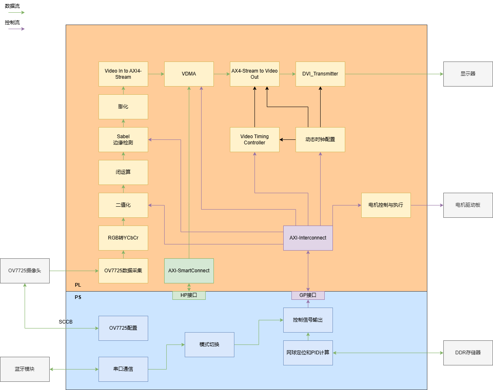
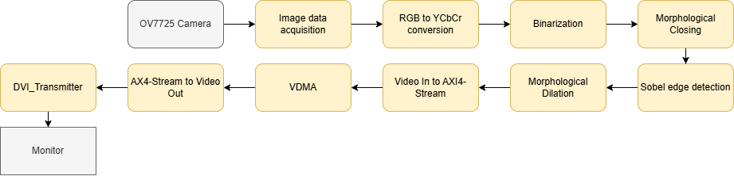
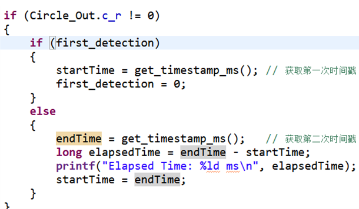
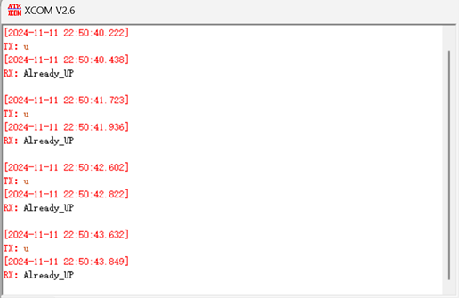
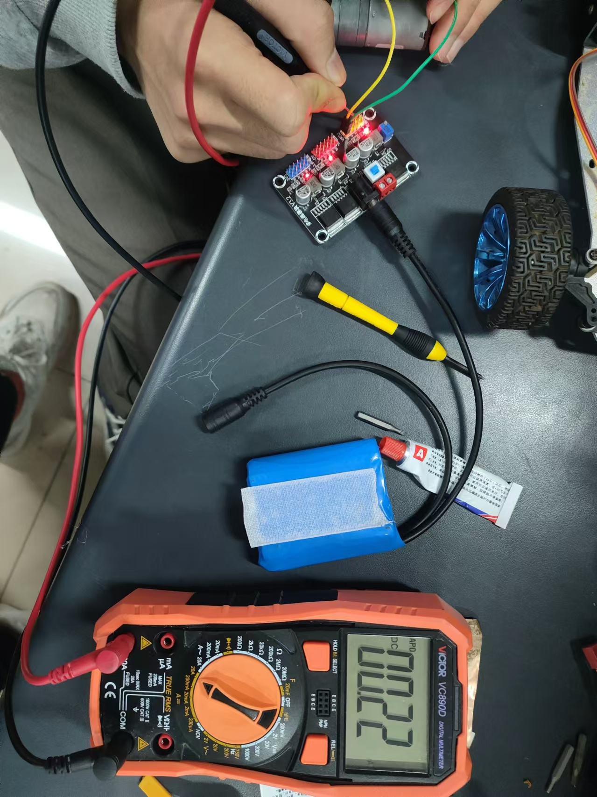

网球球童机器人

by 鲁昊霖；凌奇
第一部分 设计概述
设计目的
本设计针对网球训练中常见的网球散布范围广、球体积大且拾取费时费力等问题，基于ZYNQ-7010平台开发了一款高效、精准的网球球童机器人。该机器人能够根据视野范围内的网球位置进行精准识别，并自动移动至指定位置完成捡球任务，极大地提升了训练效率。机器人还具备与用户的互动功能，在自动寻球模式失效的情况下可以手动捡球。这一系统的实现有助于简化训练流程，提高运动者的训练专注度，同时减少人工干预，提升训练的整体效果。
应用领域
（1）智能体育训练：该机器人可广泛应用于网球训练场，帮助教练和运动员在训练过程中快速、准确地捡球，提高训练效率，减少人为干预，让运动 员能够专注于技术训练和战术演练。 （2）体育赛事场地服务：机器人不仅适用于日常训练，也可用于正式网球比赛中，帮助赛事工作人员减少人工捡球的时间成本，确保比赛的流畅进行。
主要技术特点
本设计基于ZYNQ-7010平台，集成ARM Cortex-A9处理器与Xilinx 7系列FPGA，充分利用硬件与软件协同工作，优化图像处理和运动控制效率。系 统通过FPGA加速图像处理，将RGB图像转为YCbCr格式，并执行二值化、 边缘检测、腐蚀和膨胀等操作，从中提取网球特征。这些图像处理任务在 FPGA中并行计算，大幅提升处理速度，确保实时追踪网球运动轨迹。 数据交换通过AXI总线实现，确保FPGA与ARM处理器之间的高速传输。处理后的图像数据通过AXI Video Stream接口传输到ARM处理器，处理器将其存储在DDR内存中，并进一步分析网球的位置与速度信息。处理器基于这些数据生成控制信号，精确控制机器人的路径。 此外，设计集成蓝牙模块，实现机器人与手机端实时交互，提供控制指令。
关键性能指标
（1）图像处理速度：图像处理模块应能够在每帧图像内完成RGB到YCbCr格式转换、二值化、边缘检测、腐蚀和膨胀等操作，图像帧率至少达到30帧/秒，确保实时追踪网球运动轨迹。 （2）拾取效率：a.机器人应确保在球场半场（长18.3米×宽18.3米）内所有区域均能有效执行捡球任务；b.捡球的成功率应达到95%以上；c.一次最多可以容纳9颗网球。 （3）蓝牙通信：蓝牙模块应支持至少10米的有效通信距离，并能够实时传输控制指令，响应时间不超过250毫秒。 （4）系统功耗：整个系统的功耗应控制在10W以内，确保机器人在长时间使用中的稳定性和续航能力。
主要创新点
（1）自定义形态学操作IP核：将24位YCbCr格式图像数据存储于5×5 的 RAM阵列中，通过并行计算方式实现高效的腐蚀膨胀操作。该设计利用 多行并行处理技术显著提升了形态学操作的处理速率与图像帧率，并在此基 础上构建了闭运算、开运算等形态学操作IP核，优化了图像分析过程中的细节处理能力。 （2）捡球装置：系统采用电机驱动履带传动的扇叶搬运装置，通过旋转的扇叶将网球输送至二层存储空间，以增加存储容量，从而提升机器人在动态 环境中的拾球效率。 （3）高效视频数据存储与传输架构：采用AXI4-Stream格式将视频数据传输至视频内存管理（VDMA）模块，通过AXI SmartConnect和AXI_HP接口 实现DDR3内存的高效存取。结合Video Timing Controller和DXIDVI_Transmitter模块，确保视频数据流的实时性和稳定性，从而实 现 实时视觉反馈，为操作者提供直观的操作体验。 （4）ZYNQ7010的PS和PL协同计算架构:系统充分利用ZYNQ7010的处理系统（PS）和可编程逻辑（PL）协同工作的优势。PS端负责网球定位和控制信号输出，PL端则负责图像采集、处理和加速数据流的处理和视频输出，从而实现高效的自动化捡球功能。PS和PL的紧密配合提升了系统整体的处理速度和响应效率。
第二部分 系统组成及功能说明
整体介绍

本系统采用ZYNQ7010平台，结合其强大的处理能力和灵活的可编程逻辑资源，实现自动化网球捡球功能。系统的核心包括ZYNQ7010的PS端（处理系统）和PL端（可编程逻辑）。在进入自动捡球模式后，PS端负责网球定位、PID计算以及控制信号输出，而PL端负责图像采集、处理与协同加速数据流的处理与视频输出。
图像采集
当机器人进入自动捡球模式时，PS端通过SCCB协议配置OV7725图像传感器模块，设定图像采集的参数，包括二值化和边缘检测的阈值。OV7725模块以VGA分辨率采集24位RGB888格式的图像数据。通过ZYNQ平台的高速数据传输接口，采集到的图像数据进入到后续的处理流程。
图像处理模块
采集的RGB图像数据首先通过“RGB转YCbCr”模块转换为YCbCr格式。这一转换有助于后续的图像二值化处理，以便调整二值化阈值。在图像处理过程中，系统采用闭运算、Sobel边缘检测和膨胀等操作，来提取网球的边缘信息，从而为网球定位做准备。处理后的图像数据将以AXI4-Stream格式传输至后续模块进行进一步处理。
视频数据流
转换后的AXI4-Stream格式视频数据将通过“Video In to AXI4-Stream模块”传送至视频内存管理（VDMA）模块。在VDMA模块中，视频数据会通过AXI SmartConnect模块与AXI_HP端口连接，从而实现高效的DDR3内存存储与读取。这样一来，图像数据就被存储在DDR3内存中，待后续处理使用。 在处理和存储的同时，PS端可以根据需要从DDR3内存中读取数据，并将图像数据传输给AXI4-Stream to Video Out模块。该模块会将视频数据转换成合适的格式，通过Video Timing Controller模块确保正确的时序输出。经过处理的视频流最终通过DXIDVI_Transmitter模块，通过HDMI协议传输至显示屏上。
网球定位与PID控制
PS端从DDR3内存中获取图像数据后，利用图像处理结果进行网球的定位计算。通过PID算法，系统能够计算出网球的位置、速度以及最优运动轨迹。这个过程中，ZYNQ7010的处理系统承担着复杂的计算任务。计算结果通过AXI-Interconnect模块传递至调整电平输出模块，进而控制电机驱动板的行为。
电机控制与执行
控制信号最终以PWM波或高低电平的形式输出，驱动电机进行精确的运动调整。通过精确控制电机，机器人能够快速而准确地捡起网球，并将其送到预定位置。
蓝牙模块的功能扩展与集成
在现有的网球球童机器人系统中，加入蓝牙收发功能模块后，系统将能够通过手机发送控制指令，实现手动模式和自动模式的切换。蓝牙模块通过与PS端的通信接口（UART接口）传递命令，PS端根据接收到的命令控制机器人模式的切换。
各模块介绍
图像采集
图像采集模块用于实现 FPGA 与摄像头 OV7725 之间的通信，负责接收和处理摄像头输出的图像数据。模块输入包括摄像头输出的场同步信号、行同步信号和像素点数据，并采用 OV7725 的像素时钟（Pixel Clock）作为工作时钟。在像素时钟的同步控制下，模块根据场同步信号和行同步信号提取图像的有效数据，模块会将 OV7725 输出的 RGB565 格式图像数据转换为 RGB888 格式，以适配后续处理模块的需求。RGB565 格式的每个像素点占用 16 位，其中 R、G、B 分别使用 5、6、5 位编码。而 RGB888 格式每个像素点则占用 24 位，每个通道（R、G、B）各使用 8 位，提供更高的色彩精度。通过这种转换，图像采集模块可以确保图像数据在后续处理中具备更高的色彩分辨率和兼容性。
图像处理及视频流

RGB888转YCbCr模块
RGB888 转 YCbCr 模块的功能是将上一模块输出的 RGB888 格式数据转换为 YCbCr 格式，以满足后续图像处理的需求。该模块首先将 RGB888 数据拆分为红、绿、蓝三个颜色分量，并通过 OV7725 的像素时钟同步，按标准的 RGB 到 YCbCr 转换公式进行整形运算。通过公式计算得到亮度（Y）分量和色差（Cb、Cr）分量，最终得到 YCbCr 格式的像素数据，该模块不仅完成颜色空间的转换，还提供相应的同步信号输出，确保数据的同步和准确传输，方便后续图像处理模块进行进一步操作。
二值化模块
在将图像从 RGB 转换为 YCbCr 色彩空间后，我们设计了一种二值化处理方法，通过动态调整 Y、Cb、Cr 三个通道的阈值来实现。每个通道的阈值范围是 0 到 255（即一个字节表示的范围）。通过设置六个阈值（每个通道的上下限各一个），判断每个 YCbCr 像素的三个分量（Y、Cb、Cr）是否在给定的阈值范围内，从而完成图像的二值化判断，这个二值化运算程序被部署在 FPGA 的 PL（可编程逻辑）端。PL 端可以利用 FPGA 的并行处理能力，大大加速运算过程，提高二值化运算的速率。PS（处理系统）端通过 AXI-Lite 接口与 PL 端通信，动态修改阈值，以便快速调整和调试。这种设计方式可以加速图像处理过程，并提供灵活的调节方式，方便在调试过程中进行优化。
腐蚀、膨胀及闭运算
分别定义了膨胀和腐蚀模块，模块在 FPGA 的 PL 端定义了五个 RAM，用于存储图像中的五行像素数据，以便对 5x5 的像素矩阵进行处理。其中腐蚀模块操作通过与运算来去除图像中的小噪点和微小的结构连接部分，使得图像中的物体边界向内收缩，能够有效去除不需要的小细节。膨胀模块操作通过或运算来填补物体内部的空洞，并连接图像中断裂的部分，增强物体的连通性，使得物体边界扩展。这些操作有效提升了图像的质量，使图像更加清晰，同时有助于提取和突出网球等目标物体的特征。通过在 PL 端执行这些操作，可以充分利用 FPGA 的并行处理能力，提高处理速度和效率。
Sobel边缘检测模块
该边缘检测模块的输入为二值化后的像素数据。为了进行边缘检测，模块使用 Sobel 算子对每个像素周围的 3x3 邻域进行滤波处理。通过两个滤波器：水平滤波器和垂直滤波器，计算每个像素在水平方向和垂直方向上的梯度值，进而检测图像中的边缘。首先计算水平方向（X 方向）和垂直方向（Y 方向）的梯度值，之后对这两个方向的梯度值进行绝对值计算，得到每个像素在 X 和 Y 方向的变化强度。然后，通过计算 X 和 Y 方向梯度值的平方和，进一步得到每个像素的边缘强度。模块的处理程序部署在 FPGA 的 PL 端，这样可以利用 FPGA 的并行计算能力加速整个边缘检测过程。计算完成后，PS 端通过 AXI-Lite 接口动态调整阈值，并将计算出的边缘强度与阈值进行比较，从而判断每个像素点是边缘部分（白色）还是背景部分（黑色），最终输出边缘检测后的图像。
电机控制与执行
PWM 模块在 FPGA 的 PL 端实现了基本的 PWM 信号生成功能，通过加速计算提升了信号输出的速率。该模块通过调整周期和占空比来控制 PWM 信号的输出电平高低，进而实现对外部设备的精确控制。PS 端通过 AXI-Lite 接口与 PL 端通信，动态修改 PWM 的周期和占空比，此外PS端还可以控制输出端口的高低电平来传递电机的正转或反转信号，以便在 PID 控制算法中使用。这样可以控制机器人的运动，使其朝着网球方向精确移动。
第三部分 完成情况及性能参数
图像处理部分

原始图像经RGB888格式转换为YCbCr格式后，有效增强了图像中的物体特征。经过二值化和边缘检测处理，图像中无关物体的干扰基本被去除。进一步对图像进行膨胀、腐蚀等形态学运算，去除球体与环境之间的细微连接部分，补充网球内部色彩，连接断裂的边缘，确保球体轮廓的完整性。最终处理后的图像效果如图所示，图中红色方框内为检测区域，红色点标示球心位置，其他干扰基本已滤除，噪点几乎不存在，球体轮廓完整且球心识别准确。
图4 图像处理帧率测试 在检测帧率性能时，当检测到球心位置时打时间戳进行记录，每次检测到球心位置均记录一次时间，并通过串口输出两次时间记录间的间隔。测试结果显示每秒可以进行约66次检测，而OV7725的帧率为60帧/秒，因此系统检测效率满足设计要求，确保实时追踪网球运动轨迹。
捡球部分
在网球场测试中，机器人前端的捡球装置能有效拾取几乎所有落地网球。经多次测试验证，在不影响机器人正常捡球性能的前提下，球仓的最大容纳量为9颗网球。在机器人视野范围内，能够可靠地实现对所有球的自动拾取。若网球超出视野范围，则通过蓝牙控制切换机器人状态，由自动捡球模式切换至手动遥控模式，将机器人移动至网球位置附近，再切回自动捡球模式以继续完成捡球任务。
蓝牙通信

在距离机器人10米的位置，我们通过上位机向FPGA连接的蓝牙外设发送指令。发送端在发送指令时记录时间戳，并记录接收到FPGA回复的时间。测试结果显示，发送与接收的时间差约为200毫秒，表明蓝牙远程控制机器人的响应时间稳定在200毫秒左右，符合关键技术指标要求，确保用户使用时可以正常远程操控。
系统功耗

在ZYNQ及其外设正常供电的情况下，我们测得系统功耗如下：FPGA、摄像头和HDMI显示模块在5V电压下的电流为0.51A；后轮电机在PWM占空比为80%、电压为12V时的电流为0.18A；捡球模块电机在PWM占空比为80%、电压为12V时的电流为0.22A。根据测量数据，系统总功耗计算为： P=5V×0.51A+12V×(0.18A+0.22A)=9.51W 因此，系统功耗为9.51W，符合关键技术指标要求，确保机器人在长时间使用中的稳定性和续航能力。